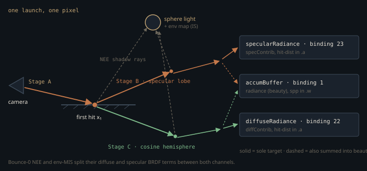

Monograph · Tree · ← Module hub · Raygen integrator
path-tracer
Raygen integrator
Stages A/B/C, NEE, dual-lobe, AOV writes.
The file that documents itself wrong
`pt_raygen.rgen` opens by declaring that it is a brute-force tracer with no next-event estimation. Underneath that comment sit three complete NEE blocks, environment importance sampling with MIS, Russian roulette, and twelve storage images.
// No NEE, no tricks. Just trace rays, bounce off surfaces, hit the light.shaders/rt/pt_raygen.rgen:8That comment is a fossil, and it is not the only misleading thing here. `PathTracerShaderSet` names `rt_pt_raygen.rgen.spv` as the default raygen module, which is where the "pt_raygen.rgen is the path tracer" belief comes from:
const char* raygenSpv{"bin/shaders/rt_pt_raygen.rgen.spv"};ohao/render/rt/path_tracer.hpp:55but every `PathTracer` instance in the engine is owned by an `RTProfileRendererBase`, and that base overwrites the shader set on `init()` with the profile's own before the pipeline is built:
m_pathTracer.setShaderSet(m_shaderSet);ohao/render/rt/rt_profile_renderer.hpp:99Both concrete profiles supply a different raygen — `RTOfflineRenderer` binds `pt_raygen_offline.rgen`, `RTRealtimeRenderer` binds `pt_raygen_realtime.rgen`.
"bin/shaders/rt_pt_raygen_offline.rgen.spv",ohao/render/rt/rt_profile_renderer.hpp:220So `pt_raygen.rgen` still compiles to SPIR-V and is still the cleanest reading of the algorithm, but nothing you render comes out of it.
One primary ray, two sub-paths
A textbook path tracer picks one BSDF lobe per vertex with some probability and divides the throughput by that probability. This raygen refuses to do that at the first hit. It forks: Stage B walks a specular-lobe direction, Stage C walks a cosine-hemisphere direction, each with its own throughput, bounce loop, NEE, Russian roulette and accumulator.

The fork exists for the denoisers, not for the integrator. REBLUR and DLSS Ray Reconstruction consume diffuse and specular radiance as two separate images. A stochastic lobe choice would leave one of the two channels with zero samples in most pixel-frames, which a denoiser cannot tell from black — so the engine pays for a second secondary chain per pixel instead of splitting a single one after the fact.
The bill is paid in estimator rigour. At the fork the specular chain carries `mix(1, albedo, metallic)` and the diffuse chain carries `albedo`; neither divides by a sampling pdf, and the specular one has no Fresnel and no shadowing term at all. The code says as much:
// Material throughput factor (f*cos/pdf for the specular lobe, simplified).shaders/rt/pt_raygen.rgen:528specThroughput = mix(vec3(1.0), albedo, metallic);shaders/rt/pt_raygen.rgen:529For a dielectric that means the indirect specular chain leaves the first hit at unit throughput regardless of incidence angle or roughness. Direct light is untouched — bounce-0 NEE still evaluates full analytic Cook-Torrance.
The approximation does not stop at the fork. From bounce 2 Stage B does restore stochastic lobe selection, but when it picks the specular lobe it multiplies by that same `mix(1, albedo, metallic)` and then divides only by `specProb` — the discrete lobe-choice probability. Nothing restores the missing $f\cos\theta/\text{pdf}$, so every specular vertex carries the approximation, not just the seed one.
specThroughput *= mix(vec3(1.0), bAlbedo, bMetallic);shaders/rt/pt_raygen.rgen:796specThroughput /= max(specProb, 0.01);shaders/rt/pt_raygen.rgen:797The diffuse lobe needs no such correction: cosine-hemisphere sampling of a Lambertian BRDF gives $f\cos\theta/\text{pdf} = \rho$, which is exactly the albedo the code multiplies in, at the fork and at every later diffuse bounce.
The light estimator, and the shadow ray that carries no boolean
One light is chosen uniformly per NEE event, then dispatched on `positionAndType.w` into four branches — sphere, directional, spot, area rect. Only the sphere branch matches the textbook form, sampling a point and folding the solid-angle Jacobian into a scalar the code calls `weight`:
$N_\ell$ is the light count, undoing the uniform $1/N_\ell$ selection probability. $A = 4\pi r^2$ is the sphere's area, $n_\ell$ the outward normal at the sampled point, $d$ the distance to it, and $V$ visibility. $L_e$ is radiant exitance, colour × intensity divided by $\max(A,\,0.01)$, so an artist's "intensity" is total power, not per-unit-area radiance. Above $r \approx 0.028$ that clamp is inert and $L_e A$ collapses back to colour × intensity; below it the light silently stops scaling with its own area. The whole product is one line:
vec3 directContribution = Le * (diff + spec) * NdotL * weight * float(lightBuf.lightCount);shaders/rt/pt_raygen.rgen:414$L_e$ is computed once *before* the branch, from the sphere formula, using `dirAndParam.w` as a radius. An area rect stores its true area separately in `extra2.w` and uses that in `weight` — so its radiance is normalised by a $4\pi r^2$ that describes no part of its geometry, and the $L_e A$ cancellation does not occur. Directional lights sample no point at all and set `weight = 1`.
$V$ never becomes a variable. The shadow ray reuses payload location 0, with `payload.hitDist` pre-set to a 999.0 sentinel and traced under `TerminateOnFirstHit | Opaque | SkipClosestHitShader`. On a hit no shader runs, so the 999.0 survives and reads as occluded; on a miss the miss shader stamps a negative distance. "hitDist went negative" *is* the unoccluded test, and the sentinel is the load-bearing half of it.
payload.hitDist = -1.0; // signal missshaders/rt/pt_miss.rmiss:59Skipping closest-hit is a cost decision, not a correctness one. Closest-hit also writes `payload.hitDist`, and `gl_HitTEXT` is never negative, so removing the flag would leave the visibility test intact and merely pay for a full material decode on every shadow ray.
payload.hitDist = gl_HitTEXT;shaders/rt/pt_closesthit.rchit:39The env-MIS block exploits the same call twice over: the miss shader also fills `payload.color` with environment radiance for that direction, so a visibility ray toward an importance-sampled environment direction *is* the radiance fetch. The flip side is a real ordering hazard. A shadow ray that misses overwrites `payload.color`, and the first hit's emissive lives in exactly that field, so it has to be read into a local before the first NEE trace or it is gone. `hitNormal` and `hitAlbedo` survive — the miss shader never touches them, and the hit branch runs no shader at all.
vec3 emissive = payload.color;shaders/rt/pt_raygen.rgen:266Shadow `tmax` for the three positional branches is the distance to the sampled surface point minus 0.02, not the light radius; sampling a sphere's surface and tracing to its centre distance would make every sphere light self-occlude. Directional lights and every env-MIS visibility ray have no sampled point to aim at and use a flat 10000.0 instead.
Weighting the environment against itself
Environment light arrives by two strategies — an explicit CDF-driven sample at each vertex, and whatever a BSDF-sampled ray hits when it escapes — so both need MIS weights or the sky is counted twice. The miss shader returns the environment pdf of the escape direction; the loop weighs it against the pdf the BSDF sampler used for that bounce:
envMisWeight = misBalanceHeuristic(specLastBsdfPdf, payload.envPdf);shaders/rt/pt_raygen.rgen:561return pdfA / max(pdfA + pdfB, 1e-6);shaders/includes/rt/mis.glsl:8The balance heuristic is used, not the power heuristic, although both are available in the header. Below roughness 0.05 the bounce is flagged as a delta lobe and MIS is skipped entirely (weight 1) — a mirror direction has no comparable density, and dividing by a fabricated one darkens chrome.
Where the three files stop agreeing
`pt_raygen_offline.rgen` still tells you it is a verbatim copy that must be kept in sync by hand. It has not been one for a long time.
// Currently a verbatim copy of pt_raygen.rgen (kept as a separate entry point soshaders/rt/pt_raygen_offline.rgen:8Four divergences matter when reading a render:
- **Sphere-light sampling.** The reference and offline files sample a uniform
point on the sphere surface, whose weight $\cos\theta_\ell A / d^2$ diverges as the shading point approaches the light. The realtime file replaces it with pbrt's subtended-cone sampling, whose weight is the bounded solid angle $2\pi(1-\cos\theta_{\max})$ — same expectation, no overlapping-light firefly.
weight = 6.2831853 * (1.0 - cosThetaMax);shaders/rt/pt_raygen_realtime.rgen:171- **Glossy bounce, first one only.** The crude sampler — jitter the mirror
direction by a roughness-scaled cosine vector — lives in all three files. Realtime replaces it at the bounce-1 fork alone, sampling the GGX distribution of visible normals (Heitz 2018), which collapses the estimator weight to Fresnel times a height-correlated Smith ratio. Its Stage B loop from bounce 2 on is byte-identical to the reference file's: same jitter, same un-Fresnelled `mix(1, albedo, metallic)` throughput.
specThroughput = F * smithG2overG1GGX(NdotV, NdotL, alpha);shaders/rt/pt_raygen_realtime.rgen:792- **Stage C.** In the realtime file the diffuse sub-path is no longer a plain
bounce loop but a ReSTIR GI reservoir over the secondary vertex, with temporal and spatial reuse.
giReservoirUpdate(giCurr, xs, ns, Lo, w_i, rSel);shaders/rt/pt_raygen_realtime.rgen:1529- **Skin.** The offline file grew a second sharp GGX "oil" lobe and a
Christensen-Burley diffusion wrap, both in the bounce-0 direct block and neither behind a material flag — but they are gated differently. The oil lobe fires on any non-metal whenever the global SSS strength `pc.tuning.w` is non-zero, and is scaled by that strength alone.
if (pc.tuning.w > 0.001 && metallic < 0.5) {shaders/rt/pt_raygen_offline.rgen:421Only the diffusion wrap is narrowed to warm-tinted albedo, by multiplying that same strength with a `skinHint` term.
float skinHint = clamp((albedo.r - albedo.b) * 3.0, 0.0, 1.0);shaders/rt/pt_raygen_offline.rgen:445The AOV encoding splits two ways, and this is the one place the profiles do *not* diverge from each other. The reference file writes linear RGB and a raw hit distance into bindings 22/23; both shipped profiles run the same NRD front end first, demodulating the diffuse by first-hit albedo and converting to YCoCg with a hit distance normalized against view depth and roughness — the identical `nrdPackRadianceHitDist` call in both.
AOV_ACCUMULATE_WRITE(diffuseRadiance, pixel, vec4(diffContrib, diffHitDist));shaders/rt/pt_raygen.rgen:1267vec3 ycocg = nrdLinearToYCoCg(max(linearRadiance, vec3(0.0)));shaders/includes/rt/nrd_frontend.glsl:39Only the diffuse is demodulated. `specContrib` goes into the packer raw:
vec4 specPacked = nrdPackRadianceHitDist(specContrib, specHitDist, firstHitViewZ, firstHitRough);shaders/rt/pt_raygen_offline.rgen:1350The compositor nevertheless re-multiplies the denoised specular by the F0 AOV, so the diffuse channel round-trips (divide, then multiply) while the specular is multiplied by a factor no raygen ever divided out. That asymmetry is live on every NRD frame.
vec3 composed = diffRad * diffAlbedo + specRad * specColor;shaders/rt/nrd_compose.comp:32One more offline-only line is worth knowing about: temporal reprojection reads `accumBuffer` at a *neighbour* pixel that sibling invocations are concurrently writing, which is an unordered cross-invocation read-after-write. The offline camera is static, so the file simply forces the own-pixel branch and buys run-to-run determinism.
useReprojection = false;shaders/rt/pt_raygen_offline.rgen:1245Two fields in one word, because the push constant is full
`params.w` carries `maxBounces` in its low 16 bits and the realtime per-frame sample count in its high 16 — not a micro-optimisation. The push-constant block is three `mat4`s, two `uvec4`s and two `vec4`s, exactly 256 bytes, and a static assert holds it there. That 256 is a device limit, not a spec floor: core Vulkan only guarantees a `maxPushConstantsSize` of 128 bytes, so the block is already twice the portable budget and a new field would have to displace an old one.
OHAO_ASSERT_GPU_LAYOUT(PTPushConstants, layout::kPTPushConstantsBytes);ohao/render/rt/path_tracer.hpp:475const uint32_t packedBouncesAndSpf = (spf << 16) | (m_maxBounces & 0xFFFFu);ohao/render/rt/path_tracer_render.cpp:696The realtime raygen unpacks the high half and loops N decorrelated paths per dispatch, re-seeding the sampler with `frameIdx * N + s` so the sub-samples do not repeat a sequence; the pixel jitter is computed once outside that loop, so NRD and DLSS still see exactly one sub-pixel offset per frame.
uint samplesPerFrame = max(pc.params.w >> 16, 1u);shaders/rt/pt_raygen_realtime.rgen:287Sampler dimensions are padded, not budgeted
`dimIdx` advances by a *path-dependent* amount — the below-horizon fallback in the glossy sampler consumes two extra dimensions only on the pixels that need it — so no fixed dimension budget exists. The Sobol sampler absorbs this by padding: dimension `d` selects Owen-scramble pad `d >> 2` and Sobol dimension `d & 3` within it.
uint pad = dim >> 2;shaders/includes/rt/sampler_sobol.glsl:69Stratification is therefore guaranteed only inside groups of four consecutive dimensions, and two neighbouring pixels that took different branches are no longer aligned in dimension space — the price of not tracking a per-path dimension budget.
Read `pt_raygen.rgen` to learn the algorithm; read the profile you actually render with to learn the pixels, because the reference file produces none. The two shipped raygens have diverged from it and from each other in light sampling, first-bounce glossy sampling, diffuse-path structure and the offline-only skin lobes — and only the offline file's stale header still claims otherwise.
Contracts
- Every `PathTracer` gets its raygen from the owning profile; `PathTracerShaderSet`'s default `rt_pt_raygen.rgen.spv` is compiled but never bound at runtime.
- A shadow ray's result is `payload.hitDist < 0.0`, which holds only because the caller pre-sets `payload.hitDist = 999.0` before every trace. With closest-hit skipped nothing writes the payload on a hit, so drop the pre-set and an occluded ray inherits the previous trace's result — a preceding env-MIS miss leaves −1.0 and the next shadow test reports "unoccluded". `gl_RayFlagsSkipClosestHitShaderEXT` itself is only a cost saving; closest-hit writes a non-negative `gl_HitTEXT` and would test the same.
- The first hit's emissive must be read out of `payload.color` into a local before the first NEE trace; a shadow ray that misses overwrites that field with environment radiance. `payload.hitNormal` and `payload.hitAlbedo` are not at risk — no shader on the shadow-ray path writes them.
- Shadow `tmax` is the distance to the sampled point minus 0.02 for the sphere, spot and area branches, and a flat 10000.0 for directional lights and every env-MIS ray. Tracing a sphere light to its centre distance instead of the sampled point makes every sphere light self-occlude.
- `Le` is derived from `4πr²` before the light-type branch, but the area-rect branch weights by the stored `extra2.w`. Changing either without the other silently rescales area lights only.
- The realtime ReSTIR escape hatches (`PT_FLAG_RESTIRGI_OFF`, `_GIONLY`, `_LEGACY`, `_NOSPATIAL`, bits 5-8) are unreachable: the host only ever sets bits 0-4, so temporal and spatial reuse are always on and the legacy Stage C path is dead. {{cite ohao/render/rt/path_tracer_render.cpp "constexpr uint32_t kPTFlagDLSSRR = 1u << 4;"}}
- Bindings 22/23 hold linear RGB in `pt_raygen.rgen` and YCoCg in both shipped profiles. Anything reading them must know which raygen produced the frame.
Source files
shaders/rt/pt_raygen.rgenohao/render/rt/path_tracer.hppohao/render/rt/rt_profile_renderer.hppshaders/rt/pt_miss.rmissshaders/rt/pt_closesthit.rchitshaders/includes/rt/mis.glslshaders/rt/pt_raygen_offline.rgenshaders/rt/pt_raygen_realtime.rgenshaders/includes/rt/nrd_frontend.glslshaders/rt/nrd_compose.compohao/render/rt/path_tracer_render.cppshaders/includes/rt/sampler_sobol.glslParent hub for the full pipeline narrative; this page is the file-level design unit. Sitemap · hover glossary terms anywhere.